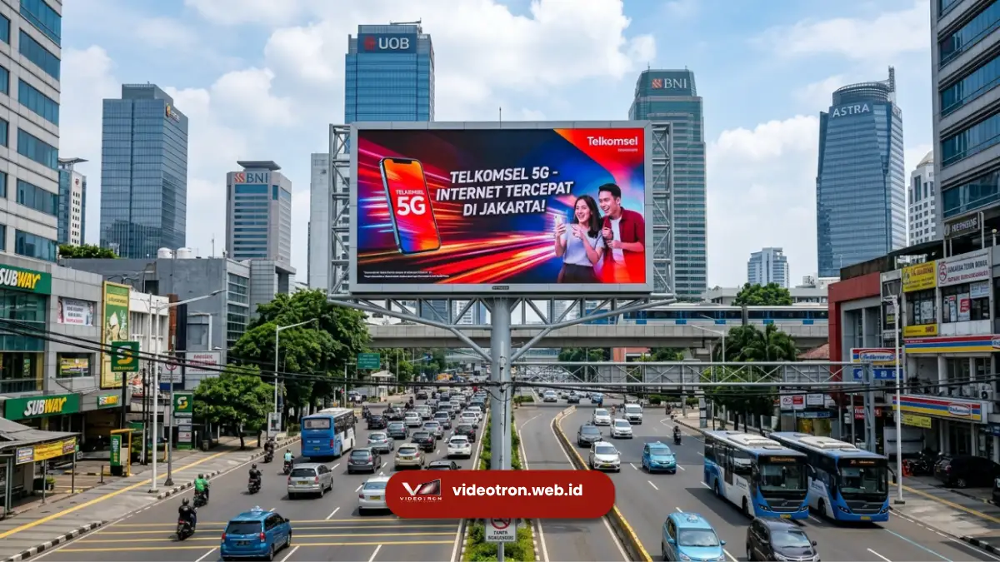

- 1. Apa Itu Supplier Videotron dan Apa Perannya?
- 2. Mengapa Bisnis di Jakarta Membutuhkan Supplier Videotron?
- 3. Apa Saja Layanan yang Ditawarkan Supplier Videotron Jakarta?
- 4. Berapa Kisaran Biaya Menggunakan Jasa Supplier Videotron di Jakarta?
- 5. Apa yang Membedakan Supplier Videotron Profesional?
- 6. Bagaimana Proses Pengadaan Videotron dari Awal hingga Selesai?
- 7. Kesalahan Umum Saat Memilih Layanan Videotron
Supplier videotron Jakarta adalah penyedia jasa pengadaan, instalasi, dan perawatan layar LED skala besar untuk kebutuhan iklan, event, dan gedung korporat di wilayah Jakarta dan sekitarnya. Layanan ini mencakup konsultasi kebutuhan, pemilihan spesifikasi, hingga pemasangan videotron indoor maupun outdoor yang siap operasional.
- Supplier videotron jakarta menangani seluruh proses dari konsultasi hingga instalasi
- Layanan mencakup videotron indoor dan outdoor untuk kebutuhan komersial maupun event
- Biaya dipengaruhi oleh ukuran layar, resolusi pixel pitch, dan lokasi pemasangan
- Videotron kini menjadi salah satu media iklan luar ruang dengan pertumbuhan permintaan yang konsisten di kota besar
- vendorvideotron.web.id menyediakan layanan pengadaan videotron dengan konsultasi kebutuhan yang disesuaikan
Permintaan videotron di Jakarta terus meningkat seiring pertumbuhan sektor periklanan luar ruang dan kebutuhan branding korporat.
Bagi perusahaan yang berencana memasang videotron, memilih supplier yang tepat menjadi langkah krusial karena menyangkut kualitas layar, daya tahan perangkat, dan kelancaran operasional jangka panjang.
Apa Itu Supplier Videotron dan Apa Perannya?
Supplier videotron adalah pihak yang menyediakan layanan pengadaan layar LED besar mulai dari perencanaan, pemilihan spesifikasi, pengiriman unit, hingga instalasi dan perawatan berkala.
Peran ini mencakup aspek teknis dan konsultatif agar videotron yang dipasang benar-benar sesuai kebutuhan operasional klien.
Secara umum, layanan supplier videotron mencakup beberapa tahapan berikut:
- Konsultasi kebutuhan dan survei lokasi
- Rekomendasi spesifikasi teknis sesuai kebutuhan (ukuran, pixel pitch, kecerahan)
- Pengadaan unit videotron indoor atau outdoor
- Instalasi dan pengujian sistem
- Layanan purna jual seperti perawatan dan garansi
Peran supplier menjadi sangat penting karena videotron merupakan investasi jangka panjang yang membutuhkan perencanaan matang sejak awal, bukan sekadar pembelian perangkat.
Mengapa Bisnis di Jakarta Membutuhkan Supplier Videotron?
Bisnis di Jakarta membutuhkan supplier videotron karena persaingan media iklan luar ruang yang tinggi menuntut visual yang menonjol, tahan cuaca, dan mudah dioperasikan dalam jangka panjang. Videotron memberikan fleksibilitas konten yang tidak dimiliki media statis seperti baliho.
Beberapa alasan utama bisnis memilih videotron dibandingkan media promosi konvensional antara lain:
- Konten dapat diperbarui kapan saja tanpa mencetak ulang material
- Tampilan lebih menarik perhatian dibandingkan spanduk atau baliho statis
- Cocok untuk kebutuhan jangka panjang di lokasi strategis seperti gedung perkantoran, mal, atau area publik
- Mendukung berbagai format konten, termasuk video dan animasi
Untuk wilayah padat aktivitas komersial seperti Jakarta, videotron sering menjadi pilihan utama karena visibilitasnya tinggi di area dengan lalu lintas orang yang padat.
Apa Saja Layanan yang Ditawarkan Supplier Videotron Jakarta?
Layanan supplier videotron jakarta umumnya mencakup pengadaan videotron indoor, videotron outdoor, sewa videotron untuk event, serta layanan purna jual seperti maintenance rutin. Setiap layanan disesuaikan dengan kebutuhan dan anggaran klien.
Pengadaan Videotron Indoor dan Outdoor
Videotron indoor umumnya digunakan untuk lobi gedung, ruang pamer, atau ballroom, dengan kecerahan yang disesuaikan untuk ruangan tertutup. Videotron outdoor dirancang dengan tingkat kecerahan lebih tinggi dan ketahanan terhadap cuaca agar tetap terlihat jelas di siang hari maupun saat hujan.
Sewa Videotron untuk Event
Selain pembelian unit permanen, banyak supplier juga menyediakan opsi sewa videotron untuk kebutuhan event seperti konser, seminar, atau peluncuran produk. Opsi ini cocok bagi perusahaan yang membutuhkan layar LED besar hanya untuk periode tertentu.
Layanan Maintenance dan Garansi
Perawatan berkala menjadi bagian penting dari layanan supplier videotron karena videotron beroperasi dalam durasi panjang setiap harinya. Layanan ini biasanya mencakup pengecekan modul LED, sistem kontrol, dan penggantian komponen bila diperlukan.

Berapa Kisaran Biaya Menggunakan Jasa Supplier Videotron di Jakarta?
Biaya jasa supplier videotron di Jakarta bervariasi tergantung ukuran layar, resolusi pixel pitch, jenis videotron indoor atau outdoor, serta kompleksitas instalasi. Semakin kecil pixel pitch, semakin tinggi resolusi dan umumnya semakin besar pula biayanya.
Beberapa faktor yang memengaruhi kisaran biaya antara lain:
- Luas total layar videotron yang dibutuhkan
- Pixel pitch atau kerapatan piksel yang menentukan ketajaman gambar
- Kondisi lokasi pemasangan, termasuk akses dan struktur bangunan
- Kebutuhan tambahan seperti sistem kontrol konten dan rangka penopang
Karena variasi ini cukup besar, konsultasi langsung dengan supplier menjadi langkah paling akurat untuk mendapatkan estimasi biaya sesuai kebutuhan spesifik proyek.
Apa yang Membedakan Supplier Videotron Profesional?
Supplier videotron profesional dapat dikenali dari kelengkapan layanan konsultasi, kejelasan spesifikasi teknis yang ditawarkan, serta ketersediaan layanan purna jual yang jelas. Faktor-faktor ini penting agar investasi videotron tetap optimal dalam jangka panjang.
Beberapa indikator yang umum digunakan untuk menilai kualitas supplier meliputi:
- Kejelasan spesifikasi teknis produk yang ditawarkan
- Transparansi proses pengadaan dari awal hingga instalasi
- Ketersediaan dukungan teknis dan garansi purna jual
- Kemampuan menyesuaikan solusi dengan kebutuhan spesifik klien, bukan solusi generik
Kesalahan umum yang sering terjadi dalam pengadaan videotron adalah kurangnya perencanaan awal terkait lokasi dan kebutuhan konten. Sehingga spesifikasi yang dipilih tidak optimal untuk kondisi pemasangan. Perencanaan matang sejak tahap konsultasi dapat meminimalkan risiko ini.
Bagaimana Proses Pengadaan Videotron dari Awal hingga Selesai?
Proses pengadaan videotron umumnya dimulai dari konsultasi kebutuhan, dilanjutkan survei lokasi, penentuan spesifikasi teknis, pengadaan unit, instalasi, hingga pengujian sistem sebelum videotron siap digunakan secara operasional.
Tahapan umum tersebut meliputi:
- Konsultasi awal untuk memahami tujuan penggunaan videotron
- Survei lokasi untuk menentukan kondisi teknis pemasangan
- Penentuan spesifikasi seperti ukuran dan pixel pitch
- Proses pengadaan dan pengiriman unit
- Instalasi serta pengujian sistem sebelum serah terima
Untuk perusahaan atau instansi di Jakarta yang sedang mempertimbangkan pengadaan videotron, memulai dari konsultasi kebutuhan bersama tim vendorvideotron.web.id dapat membantu memastikan spesifikasi yang dipilih sesuai lokasi dan tujuan penggunaan.
Anda dapat menghubungi kami melalui vendorvideotron.web.id untuk mendapatkan penawaran dan konsultasi kebutuhan videotron secara langsung.
Untuk pembahasan lebih rinci mengenai biaya, silakan simak artikel Harga Sewa & Beli Videotron Jakarta Terbaru. Sementara untuk memahami jenis dan spesifikasi videotron yang tersedia, simak artikel Jenis & Spesifikasi Videotron Korporat Jakarta.
Kesalahan Umum Saat Memilih Layanan Videotron
Beberapa kesalahan yang sering terjadi dalam proses pengadaan videotron antara lain kurang memperhatikan kondisi lingkungan lokasi pemasangan, mengabaikan kebutuhan pixel pitch sesuai jarak pandang.
Serta tidak mempertimbangkan kebutuhan layanan purna jual sejak awal. Perencanaan yang matang sejak tahap konsultasi dapat membantu menghindari kendala operasional di kemudian hari.
Memilih supplier videotron jakarta yang tepat berarti mempertimbangkan kejelasan spesifikasi teknis, transparansi proses pengadaan, dan ketersediaan layanan purna jual.
Videotron menjadi investasi jangka panjang yang memerlukan perencanaan matang sejak tahap konsultasi awal.
Jika perusahaan atau instansi Anda sedang mempertimbangkan pengadaan videotron indoor maupun outdoor di Jakarta, tim vendorvideotron.web.id siap membantu mulai dari konsultasi kebutuhan hingga instalasi.
Kunjungi vendorvideotron.web.id untuk mendapatkan penawaran sesuai kebutuhan bisnis Anda.

Hawa Nadira
LED Technology Consultant dan Visual Educator
Konsultan dan spesialis solusi display digital berdedikasi tinggi yang fokus membagikan panduan edukatif mengenai penerapan teknologi layar LED videotron untuk kebutuhan interior modern di Indonesia.